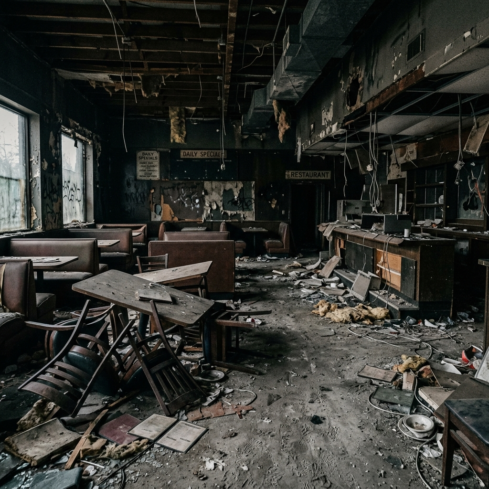
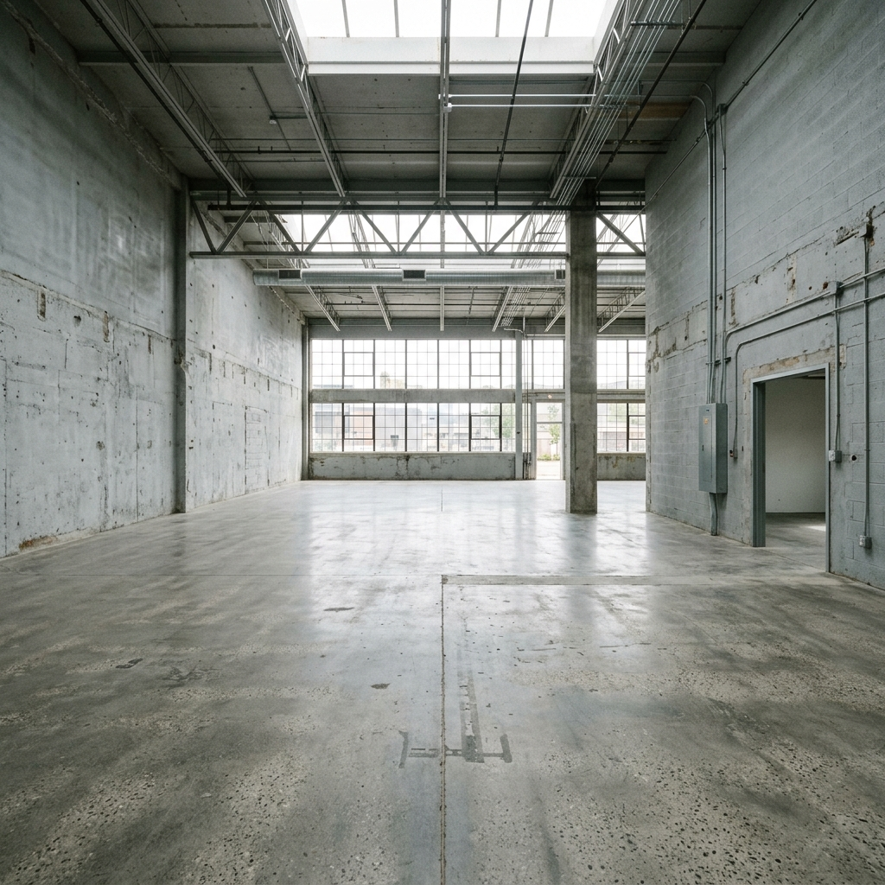
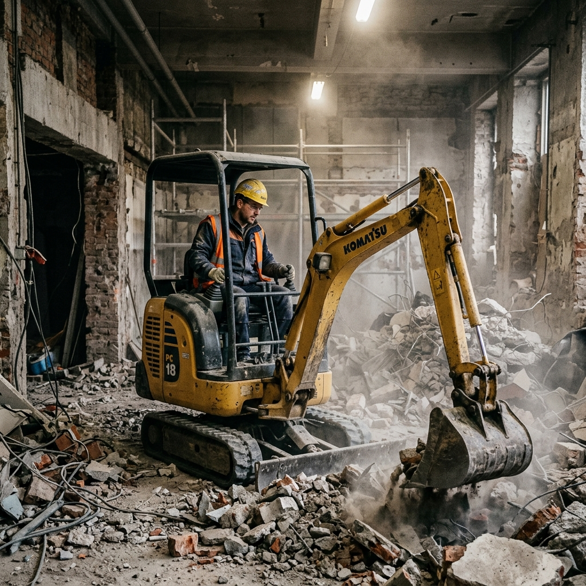
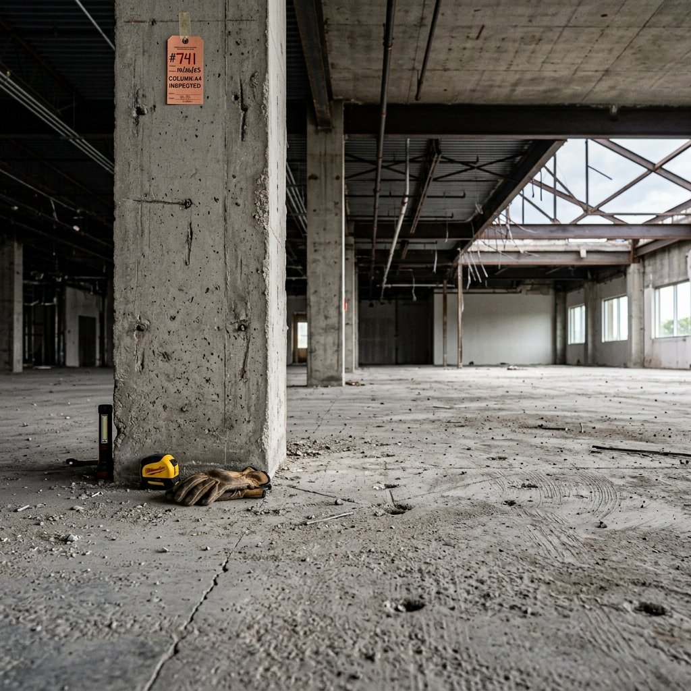
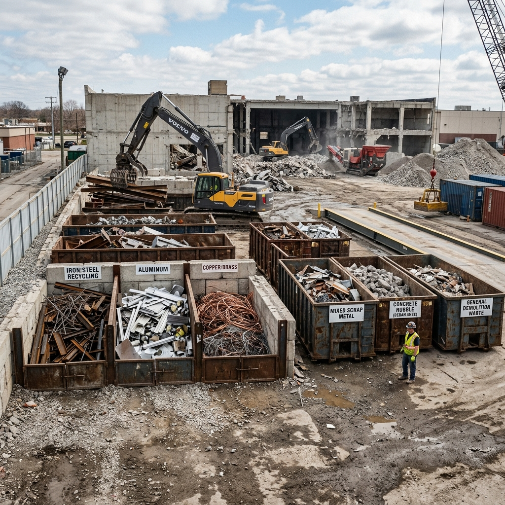

BEFORE解体前の飲食店内の様子。カウンターや造作物、厨房機器が多く残されています。

AFTER完全解体後の様子。下地や設備配管をクリアにし、綺麗なスケルトン状態に仕上げました。
| 建物種別 | 店舗（飲食店） |
|---|---|
| 施工面積 | 250㎡ (約75.6坪) |
| 工期 | 5日間 |
| 施工時期 | 2024年5月 |
| 工事内容 | 内装解体・厨房撤去・床ハツリ・造作解体 |
| エリア | 東京都港区 |
限られた5日間の短い工期の中で、商業テナント街特有の近隣調整を徹底。近隣への騒音・粉塵を最小限に抑えるよう、防音パネルや湿式作業を導入し、安全第一でスピーディーに施工を完了しました。
特に重量の大きい厨房機器の搬出時には床・壁への強固な養生を事前に行うことで、共有スペースを完全に保護したまま無傷・無災害で工事を完遂しております。

工事中の様子。小型重機を用い、スピーディーかつ安全に瓦礫を搬出します。

細部・仕上げの様子。配管周囲や躯体壁面など、隅々まで綺麗に仕上げて検査に備えます。

分別・リサイクルの様子。コンクリートくずや金属配管など、細かく分けて適正に処分します。